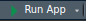

Instalación de Paquetes Requeridos de R
En Capacitación 3: Configuración de R y RStudio repasamos brevemente los conceptos básicos de Instalación de paquetes de R.
En esta sección, vamos a asegurarnos de que los paquetes de R necesarios para ejecutar RShiny y las Protecting Nature Webtools estén instalados en tu computadora. Es posible que recuerdes que en R se pueden instalar uno o más paquetes utilizando la función base de R:
install.packages()
install.packages(c('prioritizr', 'sf', 'terra', 'exactextractr', 'dplyr', 'ggplot2'))
o mostramos cómo podemos usar otras bibliotecas, como el paquete pacman, para instalar una o más funciones:
pacman::p_load(prioritizr, sf, terra, exactextractr, dplyr, ggplot2)
En el repositorio de Protecting Nature Webtools que descargaste, todo esto se realiza dentro del script start.R, que es necesario para ejecutar la aplicación RShiny:
list.of.packages <- c(
"shiny",
"shinydashboard",
"shinyIncubator",
"shinymanager",
"prioritizr",
"here",
"readxl",
"writexl",
"plyr",
"dplyr",
"tibble",
"readr",
"sf",
"ggplot2",
"foreign",
"vegan",
"terra",
"leaflet",
"rhandsontable",
"googlesheets4",
"Matrix",
"tidyr",
"gurobi",
"zip",
"DT",
"argparser",
"purrr",
"devtools"
)
new.packages <-
list.of.packages[!(list.of.packages %in% installed.packages()[, "Package"])]
if (length(new.packages)) {
install.packages(new.packages, repos = "https://cran.rstudio.com/")
}
if (!require(leaflet)) {
if (!require("devtools"))
install.packages("devtools")
devtools::install_github("rstudio/leaflet")
}
if (!require(shinyIncubator)) {
devtools::install_github("rstudio/shiny-incubator")
}
shiny::runApp(launch.browser = TRUE)
El script start.R no solo ejecutará y abrirá la aplicación en un navegador (mediante la llamada a la función shiny::runApp(launch.browser = TRUE) en la última línea), sino que también verificará si los paquetes ya están instalados e instalará los que falten.
Nota
Cuando ejecutemos la aplicación (por ejemplo, al ejecutar start.R), suponiendo que instale correctamente todos los paquetes de R requeridos sin problemas adicionales, la aplicación no se iniciará y cerrará con mensajes de error indicando que no se pueden encontrar algunos archivos. Esto es normal, ya que aún no han sido creados. Abordaremos esto en breve.
Ejecutando la Aplicación
Abre RStudio (si aún no está abierto). De forma predeterminada, RStudio abrirá el último R Project que se usó. Si este no es el R Project que creamos anteriormente, haz clic en el botón
 y navega hasta el proyecto correcto (los proyectos abiertos recientemente deberían aparecer en el menú desplegable y ser fáciles de ubicar).
y navega hasta el proyecto correcto (los proyectos abiertos recientemente deberían aparecer en el menú desplegable y ser fáciles de ubicar).
Abre el script
start.RescribiendoShift+Oen tu teclado O haciendo clic en Archivo → Abrir archivo…, lo que abrirá una ventana mostrando todos los archivos en tu directorio de trabajo. Seleccionastart.R. También puedes hacer clic en el panel Archivo en RStudio y luego hacer clic en el archivostart.R. El archivo se abrirá en el panel del editor.
{kind=link}
Hay dos formas de ejecutar el script start.R:
Haz clic en el botón  en la parte superior derecha del panel del editor, o
Escribe Ctrl+Shift+Enter en tu teclado.
Todo habrá funcionado perfectamente y todos los paquetes de R requeridos se habrán instalado sin problema. Por supuesto.
Errores
Inevitablemente, muchos de ustedes encontrarán errores mientras se instalan los paquetes al ejecutar start.R.
Por eso estamos aquí en esta capacitación: para ayudarte a solucionar los posibles errores que puedas encontrar. Algunos paquetes de R pueden producir errores con más frecuencia que otros (por ejemplo, errores con gdal, sf y sus dependencias en sistemas Linux), al igual que los errores en la instalación de paquetes en Windows cuando RTools no ha sido instalado.
Estamos aquí para ayudarte.